Lesson 2: From RNA-seq counts to data exploration
Importing, normalizing, and visualizing the data
2026-10-28
Source:vignettes/intro_RNAseq_en.Rmd
intro_RNAseq_en.RmdWelcome
This lesson is for you if you are just starting to analyze transcriptomics data (RNA-seq). We will use real data from Mexican women with lupus and healthy controls to walk, step by step, the path from a table of numbers to a biological interpretation.
What you need to know beforehand: the basics of R
(creating objects, using functions) and, if possible, a little
dplyr and ggplot2. You do not need to know
about RNA-seq: we explain it as we go.
By the end you will be able to:
- Explain what a count matrix and a metadata table are.
- Build a
DESeqDataSetobject, which is the structure used byDESeq2. - Explain why we need to normalize and
how
DESeq2does it. - Transform the data (VST) and explore it with gene plots, heatmaps, and PCA.
- Relate what you see in the plots to the biology of lupus.
Estimated time: 1 to 1.5 hours.
Lesson map
flowchart TB
subgraph pre["Already done in the package"]
direction LR
A["Reads (FASTQ)"] -- "Salmon + tximport" --> B["filtered_txi
counts"]
M["metadata_cleaned
one row per sample"]
V["volunteer_info
one row per volunteer"]
end
subgraph lec["In this lesson"]
direction LR
C["DESeqDataSet"] --> D["Filtering"] --> E["Normalization"] --> F["VST"] --> G["Exploration
genes · heatmap · PCA"]
end
pre --> lec
Glossary
These are the terms we will use. Come back here whenever you need to.
- Read: a sequenced fragment of RNA.
- Count: number of reads assigned to a gene in a sample.
- Count matrix: table of genes (rows) × samples (columns).
- Metadata: information that describes each sample.
- Library size: total number of reads in a sample (sequencing depth).
- Normalization: correction that makes samples comparable to each other.
- VST: logarithm-like transformation that stabilizes the variance.
- z-score: standardized value of a gene (in standard deviations from its mean).
- PCA: technique that summarizes many variables into a few axes.
- Batch effect: differences between samples caused by when or how they were processed, not by biology.
-
Key column: column shared by two tables that is
used to join them (here,
Volunteer_ID). - ISG (interferon-stimulated genes): genes that are switched on in response to interferon.
- SLEDAI (SLE Disease Activity Index): lupus activity score; higher = more active disease.
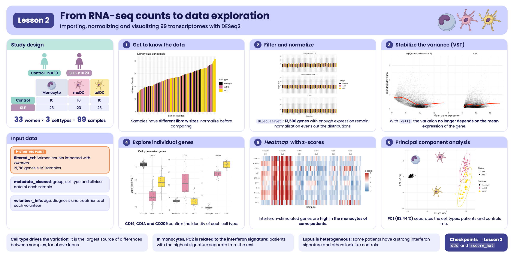
Visual summary of lesson 2.
1. Biological context: what are we studying?
Systemic lupus erythematosus (SLE) is an autoimmune disease: the immune system mistakenly attacks the body’s own tissues. It mostly affects women (about 9 out of 10 cases). One of its best-known molecular features is the interferon signature: in patients, many genes that normally respond to viral infections, called interferon-stimulated genes (ISGs), are switched on.
In this study, three types of immune cells were analyzed:
-
Monocytes (
monocyte): cells that circulate in the blood. They were obtained directly from each participant. -
Monocyte-derived dendritic cells
(
moDC): obtained by culturing monocytes with GM-CSF and IL-4. They are “activating”, because they present antigens and switch on the immune response. -
Tolerogenic dendritic cells (
tolDC): obtained by culturing monocytes with GM-CSF and IL-10. Their role is to “calm down” the immune response and promote tolerance.
Study design: 33 Mexican women took part, 10 healthy
controls (Ctrl) and 23 patients with lupus
(SLE). All three cell types were obtained from each one,
giving 33 × 3 = 99 samples. The volunteers were
recruited between June 2022 and February 2023. The data come from the
article:
Hernández-Ledesma AL, Coss-Navarrete EL, et al (2026) Gene expression profiling of dendritic cell tolerance dysfunction in women with systemic lupus erythematosus. Front. Immunol. 17:1771959. doi: 10.3389/fimmu.2026.1771959.
Our guiding question: does gene expression change in these cells when a person has lupus?
2. RNA-seq in two minutes
- RNA is extracted from the cells. Each active gene produces copies of RNA: the more active, the more copies.
- The RNA is fragmented and sequenced. Each fragment that is read is called a read.
- A program (here, Salmon) identifies which gene each read belongs to and counts them.
The result is a table: how many reads each gene has in each sample. We call this table a count matrix. More reads means more expression, but only in relative terms, as we will see in the normalization section.
Good news: the heaviest steps (aligning the reads
with Salmon and importing them with tximport) are already
done. The package includes the result, ready to analyze.
3. Setup
Installation
Install the package from GitHub and
DESeq2 from Bioconductor. You
only need to do this once.
install.packages(c("remotes", "BiocManager", "tidyverse"))
remotes::install_github("EveliaCoss/GeneExprLupusMx")
BiocManager::install("DESeq2")Load the packages
library(GeneExprLupusMx) # our data
library(DESeq2) # RNA-seq normalization and analysis
library(tidyverse) # table manipulation (dplyr) and plots (ggplot2)
library(ggrepel) # non-overlapping labels in ggplot2
library(cowplot) # combine several plots into a panelOrder matters. DESeq2 and
dplyr have functions with the same name (for example,
count() and select()). R uses the one from the
last package loaded; that is why we load tidyverse last. If
in doubt, write the package explicitly: dplyr::count().
We define the colors we will use in all the plots, so that each cell type and each group always have the same color:
4. Step 1: get to know the data
Before analyzing anything, you have to look at the data. This step prevents most errors.
4.1 The count matrix: filtered_txi
filtered_txi is a list with several matrices. The most
important one is counts:
names(filtered_txi)
#> [1] "abundance" "counts" "length"
#> [4] "countsFromAbundance"
dim(filtered_txi$counts) # genes x samples
#> [1] 21718 99
filtered_txi$counts[1:5, 1:4]
#> QR011_0 QR011_1 QR011_3 QR013_0
#> A1BG 179.000 134.000 401.000 163.000
#> A1BG-AS1 69.977 76.949 205.607 76.942
#> A1CF 0.000 0.000 0.000 0.000
#> A2M 16.000 27777.937 3700.000 29.584
#> A2M-AS1 11.000 14.063 12.000 24.416-
Rows = genes (21,718 genes, identified by their
symbol, for example
A2M). -
Columns = samples (99). Each sample name has two
parts:
QR011_1= patientQR011, cell type1(_0= monocyte,_1= moDC,_3= tolDC).
Notice two details:
-
Some numbers have decimals. Salmon
estimates the counts, because some reads could come from more
than one gene. There is no need to round them by hand:
DESeq2will do it for us. - There are many zeros. What proportion of the table is zero?
mean(filtered_txi$counts == 0)
#> [1] 0.3492151And the values are very uneven. Let us look at the first sample:
summary(filtered_txi$counts[, 1])
#> Min. 1st Qu. Median Mean 3rd Qu. Max.
#> 0.0 0.0 30.0 873.3 514.8 432335.0Half of the genes have few reads and a few have hundreds of thousands. This unevenness will matter later.
4.2 The metadata: metadata_cleaned
The metadata describe who each sample is: its group, cell type, age, treatment, disease activity, etc.
metadata_cleaned %>%
dplyr::select(sample_ID, Group, Cell_type, Age, GC, SLEDAI_category) %>%
head()
#> sample_ID Group Cell_type Age GC SLEDAI_category
#> QR011_0 QR011_0 Ctrl monocyte 25 No Zero
#> QR011_1 QR011_1 Ctrl moDC 25 No Zero
#> QR011_3 QR011_3 Ctrl tolDC 25 No Zero
#> QR013_0 QR013_0 Ctrl monocyte 23 No Zero
#> QR013_1 QR013_1 Ctrl moDC 23 No Zero
#> QR013_3 QR013_3 Ctrl tolDC 23 No ZeroHow many samples are there of each combination?
metadata_cleaned %>%
dplyr::count(Group, Cell_type)
#> Group Cell_type n
#> 1 Ctrl moDC 10
#> 2 Ctrl monocyte 10
#> 3 Ctrl tolDC 10
#> 4 SLE moDC 23
#> 5 SLE monocyte 23
#> 6 SLE tolDC 23The three samples from the same patient are not
independent: they share her genetics, age, and clinical
history. Let us store the identifier of each volunteer in a
Volunteer_ID column:
4.3 Do the counts and the metadata match?
This is the most important check of the whole analysis: column 1 of the count matrix must correspond to row 1 of the metadata, column 2 to row 2, and so on. If the order does not match, all conclusions will be wrong and R will not warn you.
TRUE: we can continue.
Challenge 1. How many patients with lupus have nephritis (kidney damage)? Hint: each patient appears three times; filter a single cell type before counting.
4.4 Each volunteer’s information: volunteer_info
metadata_cleaned has one row per
sample. But some data belong to the person,
not to the sample: when she was recruited, how many years she has had
the diagnosis, or which treatments she receives. If we put them in
metadata_cleaned, each value would be repeated three times.
That is why they live in another table, volunteer_info,
with one row per volunteer. If you did the lesson Meeting the participants, you already know
it:
dim(volunteer_info) # 33 volunteers
#> [1] 33 16
head(volunteer_info)
#> Volunteer_ID Volunteer Group Age_years Years_with_diagnosis
#> 1 QR011 1 Ctrl 25 NA
#> 2 QR013 2 Ctrl 23 NA
#> 3 QR014 3 SLE 32 5
#> 4 QR017 4 SLE 22 4
#> 5 QR020 5 SLE 42 5
#> 6 QR021 6 SLE 23 4
#> Age_at_diagnosis_years SLEDAI Nephritis Treatment_GCC GCC_drug GCC_dose_mg
#> 1 NA NA <NA> NA <NA> NA
#> 2 NA NA <NA> NA <NA> NA
#> 3 27 1 Yes TRUE PDN 5
#> 4 18 1 No TRUE PDN 8
#> 5 37 0 No FALSE <NA> NA
#> 6 19 0 No FALSE <NA> NA
#> Treatment_AM Treatment_MMF Treatment_AZT Treatment_MTT Time_of_recruitment
#> 1 NA NA NA NA 2022-06-01
#> 2 NA NA NA NA 2022-06-01
#> 3 TRUE TRUE FALSE FALSE 2022-06-01
#> 4 FALSE FALSE FALSE FALSE 2022-06-01
#> 5 TRUE FALSE TRUE FALSE 2022-06-01
#> 6 FALSE FALSE FALSE FALSE 2022-06-01The two tables share the Volunteer_ID column. It is the
key column: it will let us join them when we need to
(you will do this in Challenge 4).
With this table, Challenge 1 is solved in one line, because each person appears only once:
volunteer_info %>%
dplyr::count(Group, Nephritis)
#> Group Nephritis n
#> 1 Ctrl <NA> 10
#> 2 SLE No 20
#> 3 SLE Yes 3How many volunteers were recruited each month?
volunteer_info %>%
mutate(Recruitment = format(Time_of_recruitment, "%Y-%m")) %>% # "2022-06", "2022-07", ...
dplyr::count(Recruitment, Group) %>%
pivot_wider(names_from = Group, values_from = n, values_fill = 0)
#> # A tibble: 8 × 3
#> Recruitment Ctrl SLE
#> <chr> <int> <int>
#> 1 2022-06 2 4
#> 2 2022-07 0 1
#> 3 2022-08 3 1
#> 4 2022-09 0 1
#> 5 2022-10 1 4
#> 6 2022-12 1 1
#> 7 2023-01 2 10
#> 8 2023-02 1 1Notice January 2023: 10 patients and only 2 controls were recruited. Remember this detail; we will come back to it in the PCA.
5. Step 2: create the DESeqDataSet
object
DESeq2 stores everything in a single object, like a
file folder with three parts:
| Part | What it contains | How to see it |
|---|---|---|
| Counts | The genes × samples matrix | counts(dds) |
| Metadata | The information on each sample | colData(dds) |
| Design | Which variables explain the differences | design(dds) |
Before creating it we choose the reference levels,
that is, what we compare against. The natural choice is to compare
against healthy controls (Ctrl) and against monocytes, the
cell of origin.
metadata_cleaned$Group <- relevel(metadata_cleaned$Group, ref = "Ctrl")
metadata_cleaned$Cell_type <- relevel(metadata_cleaned$Cell_type, ref = "monocyte")
dds <- DESeqDataSetFromTximport(txi = filtered_txi,
colData = metadata_cleaned,
design = ~ Cell_type + Group)
dds
#> class: DESeqDataSet
#> dim: 21718 99
#> metadata(1): version
#> assays(2): counts avgTxLength
#> rownames(21718): A1BG A1BG-AS1 ... ZZEF1 ZZZ3
#> rowData names(0):
#> colnames(99): QR011_0 QR011_1 ... QR108_1 QR108_3
#> colData names(15): sample_ID Group ... SLEDAI_category Volunteer_IDThe formula ~ Cell_type + Group reads: “the
expression of each gene depends on the cell type and the group (lupus or
control)”.
When using DESeqDataSetFromTximport(), the message
using counts and average transcript lengths from tximport
appears. It means that DESeq2 also stored the
transcript length of each gene in each sample and will
use it when normalizing.
6. Step 3: filter lowly expressed genes
A gene with 0 or 2 reads in almost all samples provides no information: it is noise. We remove it.
Rule: we keep genes with at least 10 reads in at least 10 samples. We chose 10 samples because that is the size of the smallest group (10 controls per cell type). This way we do not discard a gene that is only expressed in that group.
7. Step 4: normalization
7.1 Why do we need to normalize?
Imagine two samples with the same gene X:
tibble(sample = c("A", "B"),
total_reads = c(10e6, 20e6),
geneX_reads = c(100, 200)) %>%
mutate(geneX_per_million = geneX_reads / total_reads * 1e6)
#> # A tibble: 2 × 4
#> sample total_reads geneX_reads geneX_per_million
#> <chr> <dbl> <dbl> <dbl>
#> 1 A 10000000 100 10
#> 2 B 20000000 200 10Sample B has twice as many reads of gene X, but it was also sequenced twice as deeply. Once corrected, gene X is expressed equally in both. That correction is normalization.
Does sequencing depth vary much in our data?
tibble(sample_ID = colnames(dds),
million_reads = colSums(counts(dds)) / 1e6,
Cell_type = dds$Cell_type) %>%
ggplot(aes(x = reorder(sample_ID, million_reads), y = million_reads, fill = Cell_type)) +
geom_col() +
scale_fill_manual(values = cell_color) +
labs(x = "Samples (sorted)", y = "Millions of reads", fill = "Cell type",
title = "Library size per sample") +
theme_minimal() +
theme(axis.text.x = element_blank())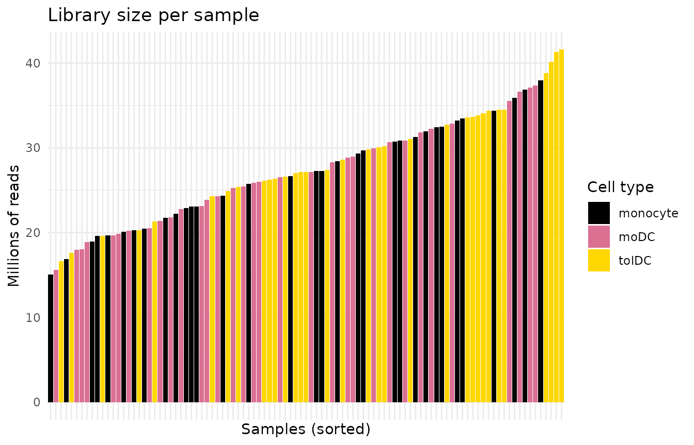
Yes: some samples have several times more reads than others. Without normalizing, we would be comparing sequencing depth, not biology.
7.2 How does DESeq2 normalize?
DESeq2 uses the median of ratios
method. In simple terms:
- For each gene it calculates a reference “average” sample (the geometric mean across all samples).
- It divides each sample by that reference, gene by gene.
- The median of those ratios is the sample’s normalization factor. Using the median prevents a few highly expressed genes from distorting the result.
With tximport data there is an extra detail: besides
depth, the transcript length, which can vary between
samples, is also corrected. That is why, instead of a single number per
sample (sizeFactors), DESeq2 stores a table of
gene × sample factors (normalizationFactors).
dds <- estimateSizeFactors(dds)
sizeFactors(dds) # NULL: not used with tximport
#> NULL
normalizationFactors(dds)[1:4, 1:4] # gene x sample factors
#> QR011_0 QR011_1 QR011_3 QR013_0
#> A1BG 0.7292214 0.7590954 0.9675822 0.8422480
#> A1BG-AS1 0.7301966 0.7591523 0.9701181 0.8427474
#> A2M 0.7285477 0.7554575 0.9710304 0.9000925
#> A2M-AS1 0.7302545 0.7590955 0.9703467 0.8427377With the factors calculated, we can now obtain the normalized counts:
norm_counts <- counts(dds, normalized = TRUE)
norm_counts[1:4, 1:4]
#> QR011_0 QR011_1 QR011_3 QR013_0
#> A1BG 245.46729 176.5259 414.43509 193.52969
#> A1BG-AS1 95.86459 101.4289 212.34528 91.36783
#> A2M 21.96150 36769.7731 3810.38550 33.32991
#> A2M-AS1 15.06324 18.4430 12.36671 28.47861Important: normalized counts are for
comparing and plotting. For the differential expression
analysis (DESeq()), the raw counts are
always used, because DESeq2 applies the normalization
internally. Never pass it already normalized counts.
8. Step 5: variance stabilizing transformation (VST)
8.1 Why another transformation?
Normalized counts still have a problem: highly expressed genes vary much more than lowly expressed ones, just because of their scale. If we ran a PCA or a heatmap with them, a few very abundant genes would dominate the result.
The solution is to use a logarithmic scale. But
log2(x + 1) exaggerates the noise of genes with few counts.
The VST (variance stabilizing transformation)
is a “smart” logarithm that fixes this.
vsd <- vst(dds, blind = FALSE)
assay(vsd)[1:4, 1:4] # values on an approximately log2 scale
#> QR011_0 QR011_1 QR011_3 QR013_0
#> A1BG 8.335329 7.980506 8.947756 8.076851
#> A1BG-AS1 7.396740 7.446462 8.176147 7.355095
#> A2M 6.400719 15.169477 11.926583 6.626424
#> A2M-AS1 6.229470 6.317794 6.150936 6.536546blind = TRUE or
blind = FALSE? With blind = FALSE,
the transformation knows the design (~ Cell_type + Group)
and does not confuse expected biological differences with noise. This is
recommended for plots and downstream analyses. Use
blind = TRUE if you want an exploration that knows nothing
about the design, for example, for quality control.
Let us check it: the plot shows, for each gene, its mean expression (x axis) against its standard deviation (y axis). Ideally the line is flat: variability should not depend on how much the gene is expressed.
mean_vs_sd <- function(mat, label) {
tibble(mean = rowMeans(mat), sd = apply(mat, 1, sd), scale = label)
}
bind_rows(mean_vs_sd(log2(norm_counts + 1), "log2(normalized counts + 1)"),
mean_vs_sd(assay(vsd), "VST")) %>%
ggplot(aes(x = mean, y = sd)) +
geom_point(alpha = 0.05, size = 0.4) +
geom_smooth(color = "red", se = FALSE) +
facet_wrap(~ scale) +
labs(x = "Mean gene expression", y = "Standard deviation") +
theme_minimal()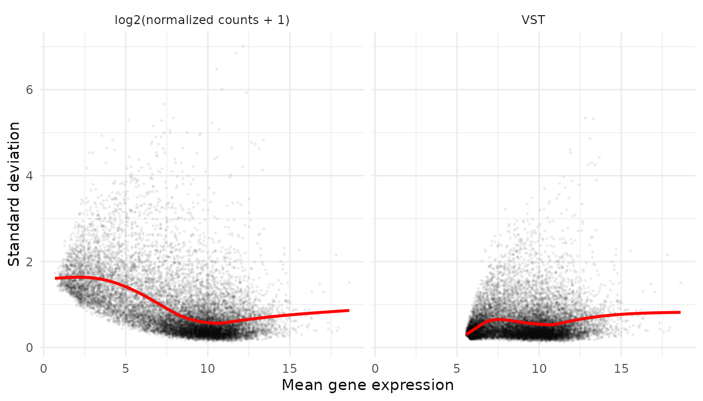
With log2(x + 1), lowly expressed genes (left) have
inflated variability. With VST the red line is flatter.
8.2 Did the normalization work?
If everything went well, the distributions of all samples should be aligned. Each box is a sample:
to_long <- function(mat, stage) {
as.data.frame(mat) %>%
rownames_to_column("gene") %>%
pivot_longer(-gene, names_to = "sample_ID", values_to = "value") %>%
mutate(stage = stage)
}
bind_rows(to_long(log2(counts(dds) + 1), "1. log2(raw counts + 1)"),
to_long(log2(norm_counts + 1), "2. log2(normalized counts + 1)"),
to_long(assay(vsd), "3. VST")) %>%
left_join(metadata_cleaned, by = "sample_ID") %>%
ggplot(aes(x = sample_ID, y = value, fill = Cell_type)) +
geom_boxplot(outlier.shape = NA, linewidth = 0.2, color = "grey50") + # grey outline: visible on black
facet_wrap(~ stage, ncol = 1, scales = "free_y") +
scale_fill_manual(values = cell_color) +
labs(x = "Samples", y = "Expression", fill = "Cell type") +
theme_minimal() +
theme(axis.text.x = element_blank())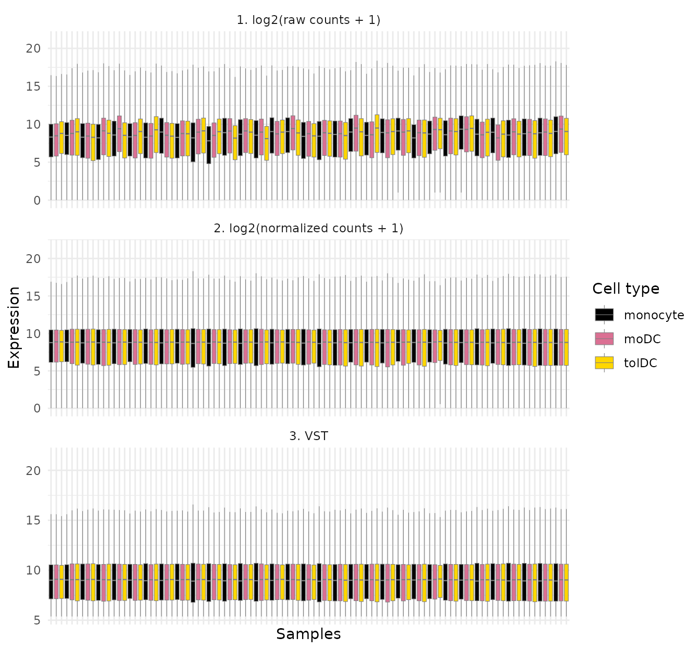
In panel 1 the boxes go up and down from one sample to the next; in panels 2 and 3 they are at the same height. The normalization worked.
9. Step 6: explore individual genes
9.1 Do the data make biological sense?
Before looking for something new, check something you already know. If the data are good, the marker genes of each cell type should behave as expected:
- CD14: classic monocyte marker.
- CD1A and CD209 (DC-SIGN): dendritic cell markers.
First we prepare a long-format table with the VST expression and the
metadata. This is the format that ggplot2 prefers:
expr_long <- to_long(assay(vsd), "VST") %>%
dplyr::select(gene, sample_ID, expression = value) %>%
left_join(metadata_cleaned, by = "sample_ID")
head(expr_long)
#> # A tibble: 6 × 17
#> gene sample_ID expression Group GC Dose Dose_category Age Cell_type
#> <chr> <chr> <dbl> <fct> <fct> <fct> <fct> <fct> <fct>
#> 1 A1BG QR011_0 8.34 Ctrl No 0 0 25 monocyte
#> 2 A1BG QR011_1 7.98 Ctrl No 0 0 25 moDC
#> 3 A1BG QR011_3 8.95 Ctrl No 0 0 25 tolDC
#> 4 A1BG QR013_0 8.08 Ctrl No 0 0 23 monocyte
#> 5 A1BG QR013_1 8.25 Ctrl No 0 0 23 moDC
#> 6 A1BG QR013_3 8.18 Ctrl No 0 0 23 tolDC
#> # ℹ 8 more variables: Group_age <fct>, Nephritis <fct>, Other_tx <fct>,
#> # Sledai_score <fct>, Sledai_group <fct>, SLEDAI_Md <fct>,
#> # SLEDAI_category <fct>, Volunteer_ID <fct>
expr_long %>%
filter(gene %in% c("CD14", "CD1A", "CD209")) %>%
ggplot(aes(x = Cell_type, y = expression, fill = Cell_type)) +
geom_boxplot(outlier.shape = NA, alpha = 0.8, color = "grey50") +
geom_jitter(width = 0.15, size = 0.8, alpha = 0.6, color = "grey50") +
facet_wrap(~ gene, scales = "free_y") +
scale_fill_manual(values = cell_color) +
labs(x = NULL, y = "Expression (VST)", title = "Cell type marker genes") +
theme_minimal() +
theme(legend.position = "none")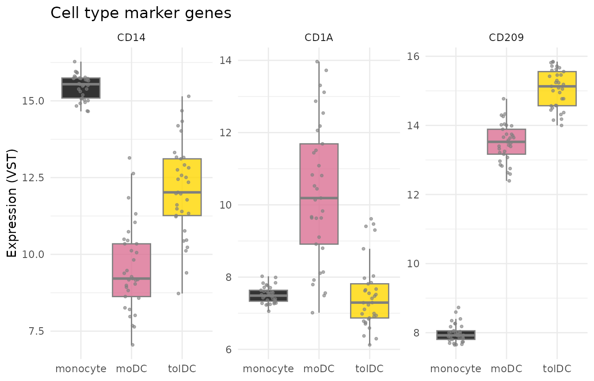
CD14 is high in monocytes and CD1A in moDC,
just as we expected. The data make sense.
9.2 The interferon signature in lupus
Now for the question of the study. Let us look at four interferon-stimulated genes (ISGs) reported in the article: IFI27, IFI44L, USP18, and IFI6.
isg <- c("IFI27", "IFI44L", "USP18", "IFI6")
expr_long %>%
filter(gene %in% isg) %>%
ggplot(aes(x = Cell_type, y = expression, fill = Group)) +
geom_boxplot(outlier.shape = NA, alpha = 0.8) +
geom_point(position = position_jitterdodge(jitter.width = 0.15), size = 0.7, alpha = 0.6) +
facet_wrap(~ gene, scales = "free_y") +
scale_fill_manual(values = group_color) +
labs(x = NULL, y = "Expression (VST)", fill = "Group",
title = "Interferon-stimulated genes") +
theme_minimal()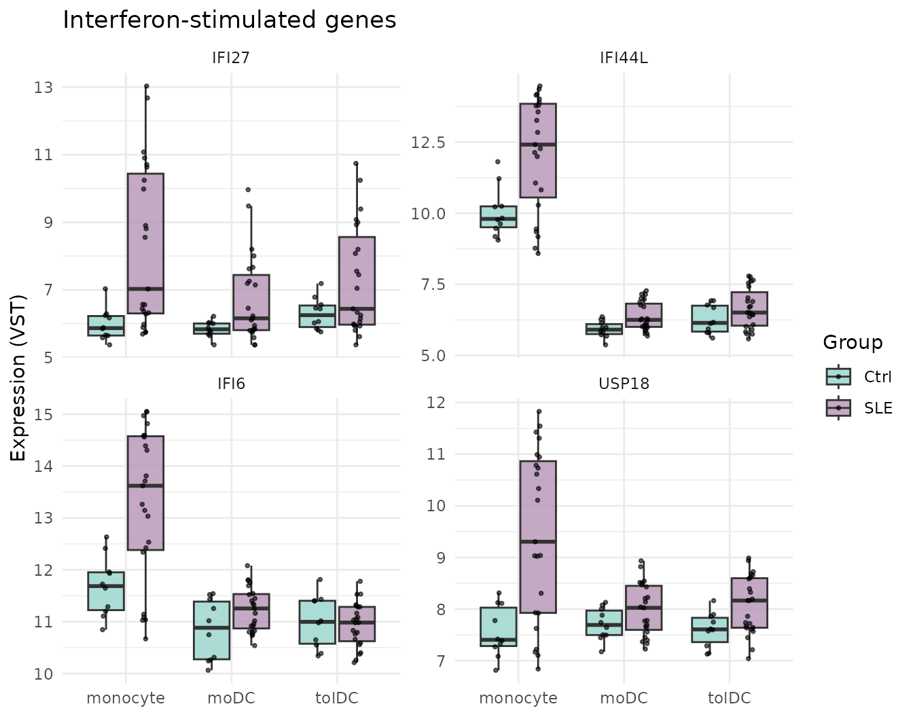
What do you observe? In monocytes, patients with lupus (lilac) express these genes more than controls (teal). Notice also that the patients’ points are widely spread: some patients have very high values and others have values similar to controls. In moDC and tolDC the difference is much smaller: when differentiating in vitro, away from the inflammatory environment of the body, the cells partly “forget” the interferon signal.
This is not yet a statistical test. A plot suggests
differences; to assert them, a differential expression analysis (for
example, with DESeq()) is needed, which takes into account
variability and multiple comparisons.
Challenge 2. The article reports that in tolDC from
patients with lupus, IL10RA, the receptor of the
anti-inflammatory signal IL-10, decreases. Plot IL10RA and
IRF4 by cell type and group. Do you see any difference?
Show solution
expr_long %>%
filter(gene %in% c("IL10RA", "IRF4")) %>%
ggplot(aes(x = Cell_type, y = expression, fill = Group)) +
geom_boxplot(outlier.shape = NA) +
facet_wrap(~ gene, scales = "free_y") +
scale_fill_manual(values = group_color) +
theme_minimal()
10. Step 7: heatmap with z-scores
A heatmap shows many genes and samples at once using colors. But each gene has its own scale (one may hover around 6 and another around 15), so we first standardize them with the z-score:
A z-score of +2 means “this gene is 2 standard
deviations above its own average in this sample”. This way all
genes end up on the same scale.
Calculate the z-scores on the transformed (VST) data, never on the raw counts. Raw counts are not corrected for sequencing depth, so the heatmap would show library size instead of biology.
vsd_mat <- assay(vsd)
vsd_mat <- vsd_mat[apply(vsd_mat, 1, var) > 0, ] # remove genes with no variation
zscore_mat <- t(scale(t(vsd_mat))) # scale() works by columns: we transpose
dim(zscore_mat)
#> [1] 13596 99
round(zscore_mat[1:4, 1:4], 2)
#> QR011_0 QR011_1 QR011_3 QR013_0
#> A1BG 1.02 0.15 2.51 0.39
#> A1BG-AS1 -0.38 -0.26 1.48 -0.48
#> A2M -1.35 1.12 0.20 -1.28
#> A2M-AS1 -0.28 0.01 -0.54 0.72We draw the heatmap of a set of ISGs, with the samples grouped by cell type and group:
isg_extended <- c("IFI27", "IFI44L", "IFI44", "USP18", "IFI6", "ISG15", "MX1", "RSAD2", "IFIT1", "OAS1")
as.data.frame(zscore_mat[isg_extended, ]) %>%
rownames_to_column("gene") %>%
pivot_longer(-gene, names_to = "sample_ID", values_to = "z") %>%
left_join(metadata_cleaned, by = "sample_ID") %>%
mutate(z = pmin(pmax(z, -2), 2)) %>% # limit to [-2, 2] so extremes do not dominate the color
ggplot(aes(x = sample_ID, y = gene, fill = z)) +
geom_tile() +
facet_grid(~ Cell_type + Group, scales = "free_x", space = "free_x") +
scale_fill_gradient2(low = "steelblue", mid = "white", high = "firebrick") +
labs(x = "Samples", y = NULL, fill = "z-score") +
theme_minimal() +
theme(axis.text.x = element_blank(), panel.grid = element_blank(),
strip.text = element_text(size = 7))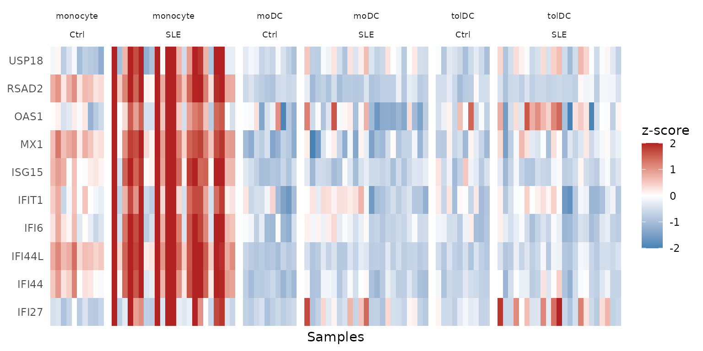
The red columns in monocyte / SLE are the
interferon signature: the 10 genes go up
together in the same patients. It is also clear that
not all patients have it; we will return to this in the PCA.
11. Step 8: principal component analysis (PCA)
11.1 What is a PCA?
Each sample is described by thousands of genes, and we cannot plot thousands of dimensions. PCA looks for the directions in which the samples differ the most and summarizes them into a few axes:
- PC1 is the axis that captures most of the variation.
- PC2 captures most of the remaining variation, and so on.
It is like taking a photo of a 3D object from the angle that best shows its shape. If two samples are close together in the PCA, their expression profiles are similar.
11.2 Compute the PCA
We use all the genes that passed the filter. Since we will repeat the calculation, we store it in a function:
calc_pca <- function(vsd_obj) {
pca <- prcomp(t(assay(vsd_obj))) # prcomp() wants samples in rows, genes in columns
list(
data = cbind(as.data.frame(pca$x[, 1:2]), as.data.frame(colData(vsd_obj))),
variance = round(100 * pca$sdev^2 / sum(pca$sdev^2), 2) # % of variance per PC
)
}
pca_all <- calc_pca(vsd)
head(pca_all$variance)
#> [1] 63.44 9.51 3.71 2.62 2.05 1.94How much information does each component hold? We see it in a scree plot:
scree_df <- data.frame(
component = seq_along(pca_all$variance),
variance = pca_all$variance,
label = paste0("PC", seq_along(pca_all$variance), ": ", pca_all$variance, "%")
)
ggplot(scree_df, aes(x = component, y = variance)) +
geom_point(color = "steelblue", size = 3) +
geom_line(color = "steelblue") +
geom_text_repel(data = scree_df[1:4, ], aes(label = label), # labels only for PC1-PC4
size = 5, box.padding = unit(0.35, "lines"),
point.padding = unit(0.3, "lines"),
color = "darkred", fontface = "bold") +
labs(title = "Scree plot: variance explained by PCA",
x = "Principal component",
y = "Percentage of variance explained") +
theme_minimal()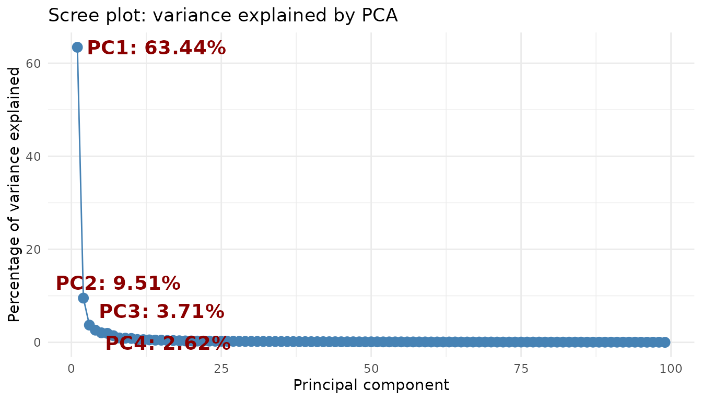
PC1 and PC2 together explain almost three quarters of the variation; from PC3 on, each component contributes very little. Plotting the first two will be enough.
11.3 Plot the PCA
ggplot(pca_all$data, aes(x = PC1, y = PC2, color = Cell_type)) +
stat_ellipse() +
geom_point(aes(shape = Group), size = 3) +
scale_color_manual(values = cell_color) +
scale_shape_manual(values = c(Ctrl = 1, SLE = 17)) +
labs(x = paste0("PC1 (", pca_all$variance[1], "%)"),
y = paste0("PC2 (", pca_all$variance[2], "%)"),
color = "Cell type", shape = "Group") +
theme_light()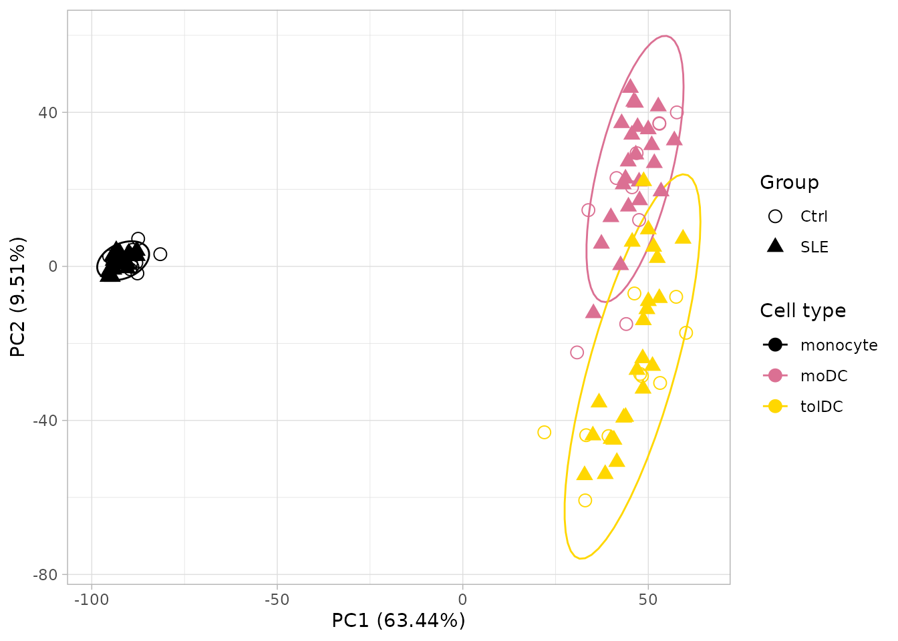
What does it tell us?
- PC1 separates monocytes from dendritic cells: differentiation completely changes the expression profile.
- PC2 separates moDC from tolDC.
- Controls and patients mix together within each cell type.
Conclusion: cell type is, by far, the largest source of variation. The effect of lupus is more subtle and gets “masked”.
All genes or only the most variable ones? Many tutorials compute the PCA with only the 500 most variable genes. That choice changes the result: with 500 genes, PC1 explains about 80% of the variation; with all of them, about 63%. Here we use all genes. Always report how many genes you used.
11.4 Looking within a single cell type
To see the effect of lupus we have to remove the variation due to cell type. Let us repeat the PCA with monocytes only, which is where we saw the interferon signature:
pca_mono <- calc_pca(vsd[, vsd$Cell_type == "monocyte"])
ggplot(pca_mono$data, aes(x = PC1, y = PC2, color = Group)) +
stat_ellipse() +
geom_point(size = 3) +
scale_color_manual(values = group_color) +
labs(x = paste0("PC1 (", pca_mono$variance[1], "%)"),
y = paste0("PC2 (", pca_mono$variance[2], "%)"),
color = "Group", title = "PCA: monocytes only") +
theme_light()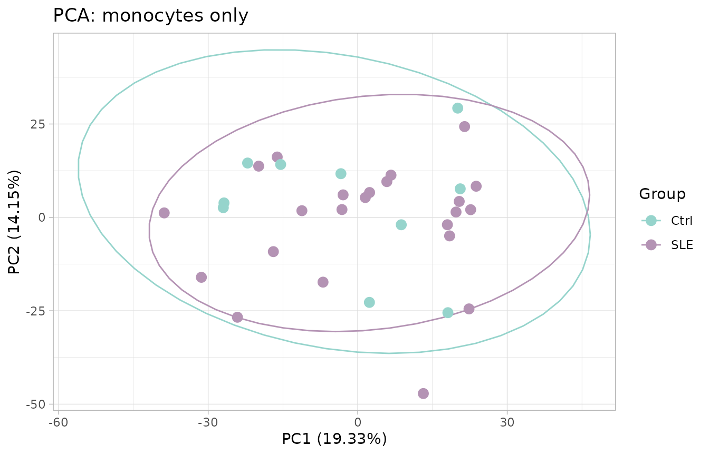
Surprise: even so, controls and patients mix together. Does that mean there are no differences? No. Remember that in section 9.2 only some of the patients had an elevated interferon signature. Let us check it by summarizing the 10 ISGs from the heatmap into a single number per sample, the interferon signature score (the average of their z-scores):
pca_mono$data$ifn_score <- colMeans(zscore_mat[isg_extended, rownames(pca_mono$data)])
ggplot(pca_mono$data, aes(x = PC1, y = PC2, color = ifn_score, shape = Group)) +
geom_point(size = 3) +
scale_color_gradient2(low = "steelblue", mid = "grey85", high = "firebrick") +
scale_shape_manual(values = c(Ctrl = 1, SLE = 17)) +
labs(x = paste0("PC1 (", pca_mono$variance[1], "%)"),
y = paste0("PC2 (", pca_mono$variance[2], "%)"),
color = "Interferon\nsignature", shape = "Group", title = "PCA: monocytes only") +
theme_light()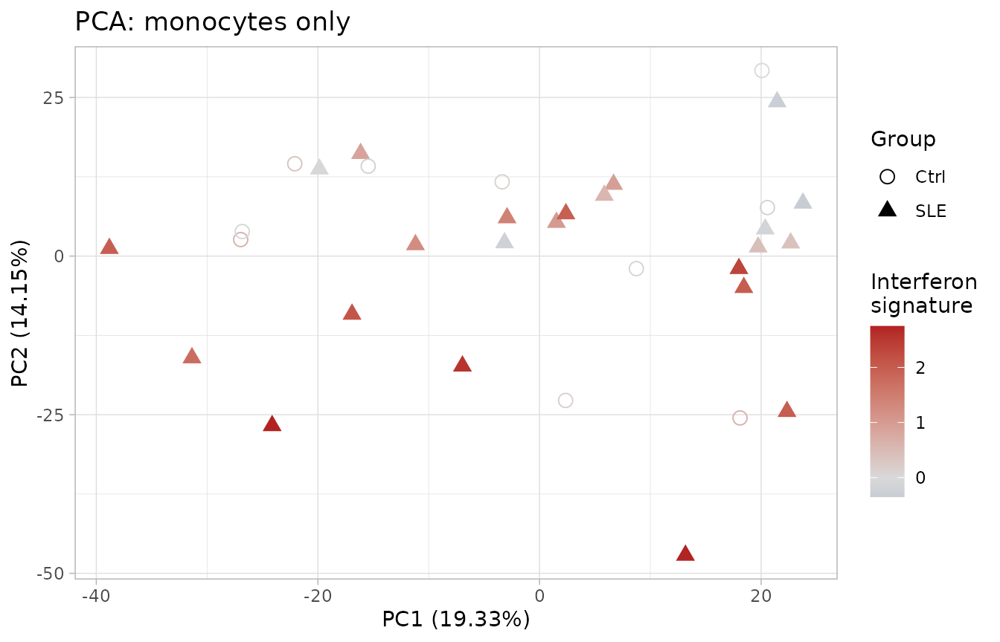
Now a pattern does appear! PC2 is related to the interferon signature: patients with the highest signature (red) tend to sit at the bottom. We learned three things:
- PCA shows the largest sources of variation, which do not always coincide with the groups we are interested in.
- Lupus is heterogeneous: some patients have a strong interferon signature and others look like controls.
- That two groups do not separate in a PCA does not mean they have no different genes.
11.5 Challenges: what other variables explain the variation?
PCA lets you ask the data which variables are associated with differences between samples. Coloring the points by different variables is the fastest way to do it. Now it is your turn.
Challenge 3. Disease activity. Color the PCA of all
samples (pca_all) by SLEDAI_category (lupus
activity according to the SLEDAI index) and draw an ellipse for each
cell type. Do samples from patients with active disease separate from
the others?
Hints:
-
SLEDAI_categoryis already inpca_all$data, because it comes from the metadata. - Color the points with
aes(color = SLEDAI_category)and add the ellipses withstat_ellipse(aes(color = Cell_type)).
Show solution
# Colors: cell types (ellipses) and activity (points)
sledai_colors <- c(
cell_color,
"Activity" = "#FC8D62",
"No_activity" = "#8DA0CB",
"Zero" = "#66C2A5"
)
ggplot(pca_all$data, aes(x = PC1, y = PC2, color = SLEDAI_category)) +
geom_point(aes(shape = Group), size = 3.5) +
stat_ellipse(aes(color = Cell_type)) +
scale_shape_manual(values = c(Ctrl = 0, SLE = 17)) +
scale_color_manual(values = sledai_colors, breaks = names(sledai_colors)) +
labs(x = sprintf("PC1 (%.2f%%)", pca_all$variance[1]),
y = sprintf("PC2 (%.2f%%)", pca_all$variance[2]),
color = "SLEDAI",
shape = "Group") +
theme_light() +
theme(plot.background = element_rect(fill = "white"),
text = element_text(size = 12),
axis.title = element_text(size = 12),
legend.title = element_text(size = 12),
legend.text = element_text(size = 12),
legend.key.size = unit(1.5, "lines"))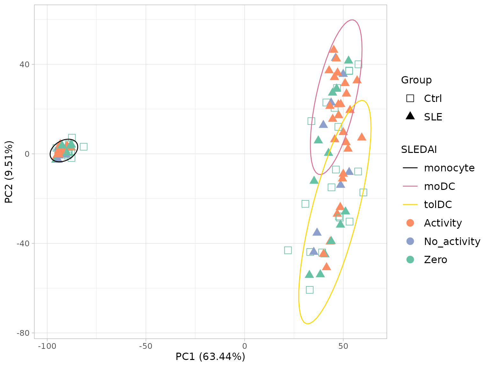
Within each cell type, the colors appear mixed: disease activity does
not separate the samples as much as cell type does. Notice also that
controls appear as Zero, because they do not have
lupus.
Challenge 4. Sample collection date (batch effect). The volunteers were recruited over nine months. If something technical changed on each date (the reagent batch, the person who processed the cells, the sequencing run), samples may resemble each other because of the date they were collected rather than because of their biology. This is called a batch effect.
Color the PCA of all samples (pca_all) by sample
collection date (Time_of_recruitment) and draw an ellipse
for each cell type.
Hints:
- The date is in
volunteer_info(one row per volunteer) and the PCA has one row per sample. Join them withleft_join()using the key columnVolunteer_ID. - Color the points by date with
aes(color = ...)and add the ellipses withstat_ellipse(aes(color = Cell_type)).
Show solution
# 1. Sample collection date for each volunteer, as text ("June 2022")
recruitment <- volunteer_info %>%
dplyr::select(Volunteer_ID, Time_of_recruitment) %>%
mutate(Date_sample = paste(month.name[as.integer(format(Time_of_recruitment, "%m"))],
format(Time_of_recruitment, "%Y")))
# 2. Join the date to each PCA sample
pca_all_date <- left_join(pca_all$data, recruitment, by = "Volunteer_ID")
# 3. Colors: cell types (ellipses) and dates (points)
date_colors <- c(
cell_color,
"June 2022" = "#66C2A5",
"July 2022" = "#8DA0CB",
"August 2022" = "#FC8D62",
"September 2022" = "#E78AC3",
"October 2022" = "#A6D854",
"December 2022" = "#FFD92F",
"January 2023" = "#E5C494",
"February 2023" = "#B3B3B3"
)
# 4. Plot
p_date <- ggplot(pca_all_date, aes(x = PC1, y = PC2, color = Date_sample)) +
geom_point(aes(shape = Group), size = 3.5) +
stat_ellipse(aes(color = Cell_type)) +
scale_shape_manual(values = c(Ctrl = 0, SLE = 17)) +
scale_color_manual(values = date_colors, breaks = names(date_colors)) +
labs(x = sprintf("PC1 (%.2f%%)", pca_all$variance[1]),
y = sprintf("PC2 (%.2f%%)", pca_all$variance[2]),
color = "Sample date",
shape = "Group") +
theme_light() +
theme(plot.background = element_rect(fill = "white"),
text = element_text(size = 12),
axis.title = element_text(size = 12),
legend.title = element_text(size = 12),
legend.text = element_text(size = 12),
legend.key.size = unit(1.5, "lines"))
p_date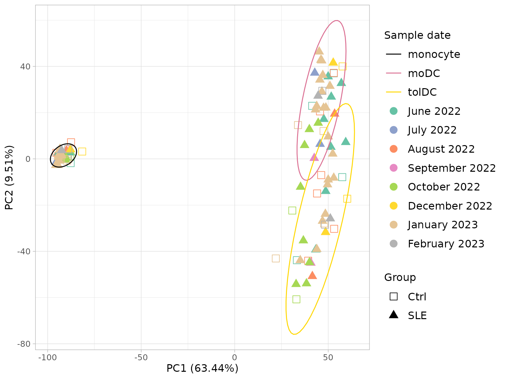
When planning a study, try to recruit controls and patients on the same dates. That way batch and group are not confounded.
11.6 To finish: the article figure
Let us bring the three PCAs together in a single panel, as they
appear in the original article. We already have the date one
(p_date, from Challenge 4); we build the other two in the
same style:
- A. Cell type, the PCA from section 11.3.
-
C. Disease activity. We use the
SLEDAIcolumn ofvolunteer_info, coded as follows:1= active (SLEDAI ≥ 6 points),0= no activity or low activity (0–5 points), andNA= controls.
# Common style for the panels
pca_theme <- theme_light() +
theme(plot.background = element_rect(fill = "white"),
text = element_text(size = 12),
axis.title = element_text(size = 12),
legend.title = element_text(size = 12),
legend.text = element_text(size = 12),
legend.key.size = unit(1.5, "lines"))
pca_labels <- labs(x = sprintf("PC1 (%.2f%%)", pca_all$variance[1]),
y = sprintf("PC2 (%.2f%%)", pca_all$variance[2]))
# A. Cell type
p_cell <- ggplot(pca_all$data, aes(x = PC1, y = PC2, color = Cell_type)) +
geom_point(aes(shape = Group), size = 3.5) +
stat_ellipse() +
scale_shape_manual(values = c(Ctrl = 0, SLE = 17)) +
scale_color_manual(values = cell_color) +
pca_labels +
labs(color = "Cell type", shape = "Group") +
pca_theme
# C. SLEDAI activity (1 / 0 / NA), joined from volunteer_info
pca_all_sledai <- pca_all$data %>%
left_join(dplyr::select(volunteer_info, Volunteer_ID, SLEDAI), by = "Volunteer_ID") %>%
mutate(SLEDAI = ifelse(is.na(SLEDAI), "NA", as.character(SLEDAI)))
sledai_article_colors <- c(cell_color, "1" = "#FC8D62", "0" = "#8DA0CB", "NA" = "#66C2A5")
p_sledai <- ggplot(pca_all_sledai, aes(x = PC1, y = PC2, color = SLEDAI)) +
geom_point(aes(shape = Group), size = 3.5) +
stat_ellipse(aes(color = Cell_type)) +
scale_shape_manual(values = c(Ctrl = 0, SLE = 17)) +
scale_color_manual(values = sledai_article_colors, breaks = names(sledai_article_colors)) +
pca_labels +
labs(color = "SLEDAI", shape = "Group") +
guides(shape = guide_legend(order = 1)) + # "Group" first, as in A and B
pca_theme
# Panel A, B, C
figure_s2 <- plot_grid(p_cell, p_date, p_sledai,
labels = c("A", "B", "C"), label_size = 18,
nrow = 1, align = "h", axis = "tb")
figure_s2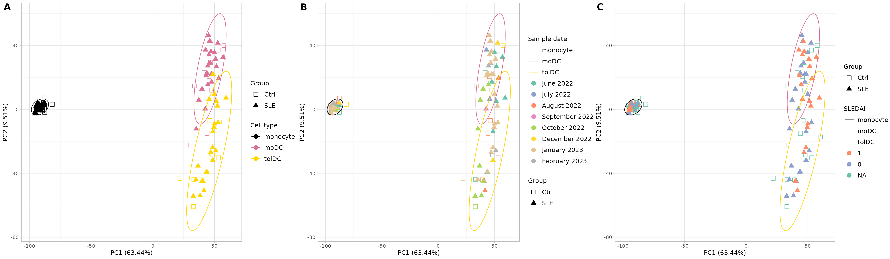
Supplementary Figure S2. Principal component analysis (PCA) of the normalized RNA-seq counts. (A) PCA colored by cell type (monocytes, moDC, and tolDC) and with shape according to group (SLE and Ctrl); it shows a clear separation, driven mainly by cell identity. (B) PCA with the sample collection dates, to assess possible batch effects between collections; no major clustering by date is observed. (C) PCA colored by disease activity (SLEDAI): 1 indicates activity (SLEDAI score ≥ 6), 0 indicates no activity or low activity (0–5 points), and controls are marked as NA. PC1 and PC2 explain 63.44% and 9.51% of the total variance, respectively. Each point represents a sample. Abbreviations: SLE, systemic lupus erythematosus; Ctrl, healthy control; mo, monocytes; moDC, monocyte-derived dendritic cells; tolDC, tolerogenic dendritic cells. The data for this figure can be found in Supplementary Table S1 and Dataset S2.
The original supplementary figure can be found in the file Data Sheet 1.docx of the supplementary material of the article.
To save the figure in high resolution:
ggsave("Figure_S2_PCA.png", figure_s2, width = 24, height = 7, dpi = 300)12. Save your results (optional)
saveRDS(dds, "dds.rds") # DESeq2 object with filtered counts
saveRDS(vsd, "vsd.rds") # transformed data (VST)
write.csv(zscore_mat, "zscore.csv") # z-scores for heatmaps in other programsTo load them again: dds <- readRDS("dds.rds").
Checkpoint. You do not need to save anything to continue: the package already includes the two main objects from this lesson, with the same names. In the following lessons it will be enough to load the package:
-
dds: the filtered and normalizedDESeqDataSet(section 7). -
zscore_mat: the z-score matrix (section 10).
13. Summary
| Step | Key function | What for? |
|---|---|---|
| Get to know the data |
dim(), dplyr::count()
|
Understand what we have before analyzing |
| Check the order | all(colnames(...) == ...) |
Avoid the most dangerous error |
| Create the object | DESeqDataSetFromTximport() |
Bring together counts, metadata, and design |
| Filter | rowSums(counts(dds) >= 10) >= 10 |
Remove genes with little information |
| Normalize | estimateSizeFactors() |
Correct for depth and length |
| Transform | vst() |
Stabilize the variance for visualization |
| Explore genes |
ggplot() + facet_wrap()
|
Verify the biology and generate hypotheses |
| Heatmap |
scale() (z-score) |
See patterns of many genes at once |
| PCA |
prcomp() + ggplot()
|
See the global structure of the data |
| Figure panel | cowplot::plot_grid() |
Combine several plots into one figure |
| Join tables | left_join() |
Add each volunteer’s information to each sample |
| Check batches | PCA colored by date (Challenge 4) | Detect technical variation before comparing groups |
Common beginner mistakes
- Not checking that the samples match between counts and metadata.
-
Passing normalized counts to
DESeq(): always use the raw ones. - Computing z-scores or PCA with raw counts: use VST.
- Treating the samples from the same patient as independent.
- Confusing “it looks different in the plot” with “it is significant”.
- Not checking for batch effects before comparing groups.
14. Next steps
The next step is the differential expression
analysis: identifying, with a statistical model, which genes
change between patients and controls within each cell type. We cover it
in the lesson Differentially expressed genes
between patients and controls with the DESeq() and
results() functions of DESeq2. A good design
should take into account the cell type, the sample collection batch, and
the pairing of samples from the same volunteer.
To continue, click the Next lesson: Differentially expressed genes button at the bottom of this page.
Additional resources:
- The official DESeq2 vignette.
- The Bioconductor RNA-seq workflow.
References
- Love MI, Huber W, Anders S (2014). Moderated estimation of fold change and dispersion for RNA-seq data with DESeq2. Genome Biology 15:550. doi:10.1186/s13059-014-0550-8
- Soneson C, Love MI, Robinson MD (2015). Differential analyses for RNA-seq: transcript-level estimates improve gene-level inferences. F1000Research 4:1521. doi:10.12688/f1000research.7563.2
- Patro R, et al. (2017). Salmon provides fast and bias-aware quantification of transcript expression. Nature Methods 14:417–419. doi:10.1038/nmeth.4197
- Hernández-Ledesma AL, Coss-Navarrete EL, et al (2026) Gene expression profiling of dendritic cell tolerance dysfunction in women with systemic lupus erythematosus. Front. Immunol. 17:1771959. doi: 10.3389/fimmu.2026.1771959.
Session information
sessionInfo()
#> R version 4.6.1 (2026-06-24)
#> Platform: x86_64-pc-linux-gnu
#> Running under: Ubuntu 24.04.5 LTS
#>
#> Matrix products: default
#> BLAS: /usr/lib/x86_64-linux-gnu/openblas-pthread/libblas.so.3
#> LAPACK: /usr/lib/x86_64-linux-gnu/openblas-pthread/libopenblasp-r0.3.26.so; LAPACK version 3.12.0
#>
#> locale:
#> [1] LC_CTYPE=C.UTF-8 LC_NUMERIC=C LC_TIME=C.UTF-8
#> [4] LC_COLLATE=C.UTF-8 LC_MONETARY=C.UTF-8 LC_MESSAGES=C.UTF-8
#> [7] LC_PAPER=C.UTF-8 LC_NAME=C LC_ADDRESS=C
#> [10] LC_TELEPHONE=C LC_MEASUREMENT=C.UTF-8 LC_IDENTIFICATION=C
#>
#> time zone: UTC
#> tzcode source: system (glibc)
#>
#> attached base packages:
#> [1] stats4 stats graphics grDevices utils datasets methods
#> [8] base
#>
#> other attached packages:
#> [1] cowplot_1.2.0 ggrepel_0.9.8
#> [3] lubridate_1.9.5 forcats_1.0.1
#> [5] stringr_1.6.0 dplyr_1.2.1
#> [7] purrr_1.2.2 readr_2.2.0
#> [9] tidyr_1.3.2 tibble_3.3.1
#> [11] ggplot2_4.0.3 tidyverse_2.0.0
#> [13] DESeq2_1.52.0 SummarizedExperiment_1.42.0
#> [15] Biobase_2.72.0 MatrixGenerics_1.24.0
#> [17] matrixStats_1.5.0 GenomicRanges_1.64.0
#> [19] Seqinfo_1.2.0 IRanges_2.46.0
#> [21] S4Vectors_0.50.3 BiocGenerics_0.58.1
#> [23] generics_0.1.4 GeneExprLupusMx_0.0.0.9000
#>
#> loaded via a namespace (and not attached):
#> [1] gtable_0.3.6 xfun_0.62 bslib_0.12.0
#> [4] lattice_0.22-9 tzdb_0.5.0 vctrs_0.7.3
#> [7] tools_4.6.1 parallel_4.6.1 pkgconfig_2.0.3
#> [10] Matrix_1.7-5 RColorBrewer_1.1-3 S7_0.2.2
#> [13] desc_1.4.3 lifecycle_1.0.5 compiler_4.6.1
#> [16] farver_2.1.2 textshaping_1.0.5 codetools_0.2-20
#> [19] htmltools_0.5.9 sass_0.4.10 yaml_2.3.12
#> [22] pkgdown_2.2.1 pillar_1.11.1 jquerylib_0.1.4
#> [25] MASS_7.3-65 BiocParallel_1.46.0 DelayedArray_0.38.2
#> [28] cachem_1.1.0 abind_1.4-8 nlme_3.1-169
#> [31] tidyselect_1.2.1 locfit_1.5-9.12 digest_0.6.39
#> [34] stringi_1.8.9 splines_4.6.1 labeling_0.4.3
#> [37] fastmap_1.2.0 grid_4.6.1 cli_3.6.6
#> [40] SparseArray_1.12.3 magrittr_2.0.5 S4Arrays_1.12.1
#> [43] utf8_1.2.6 withr_3.0.3 scales_1.4.0
#> [46] timechange_0.4.0 rmarkdown_2.32 XVector_0.52.0
#> [49] otel_0.2.0 hms_1.1.4 ragg_1.5.2
#> [52] evaluate_1.0.5 knitr_1.52 mgcv_1.9-4
#> [55] rlang_1.3.0 Rcpp_1.1.2 glue_1.8.1
#> [58] jsonlite_2.0.0 R6_2.6.1 systemfonts_1.3.2
#> [61] fs_2.1.0